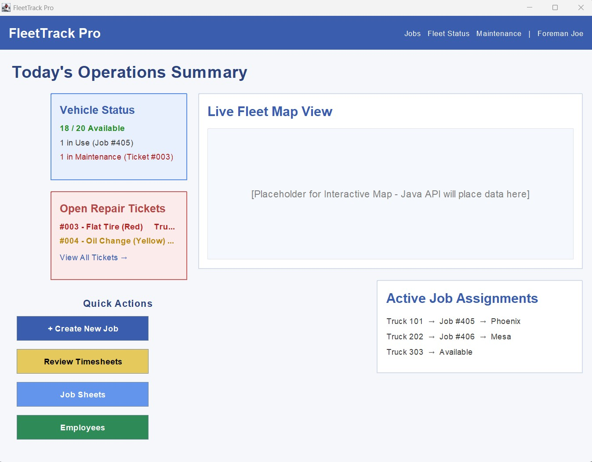
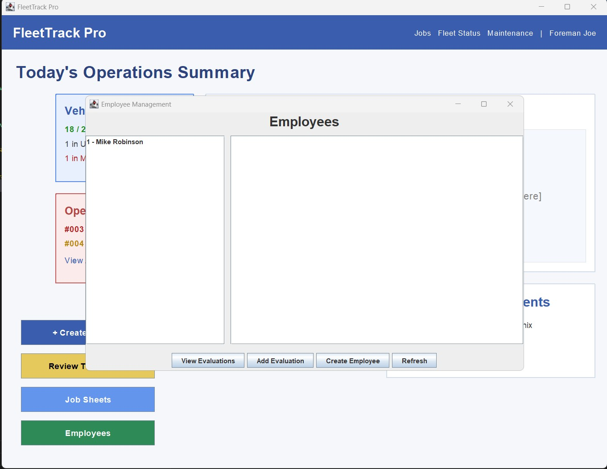
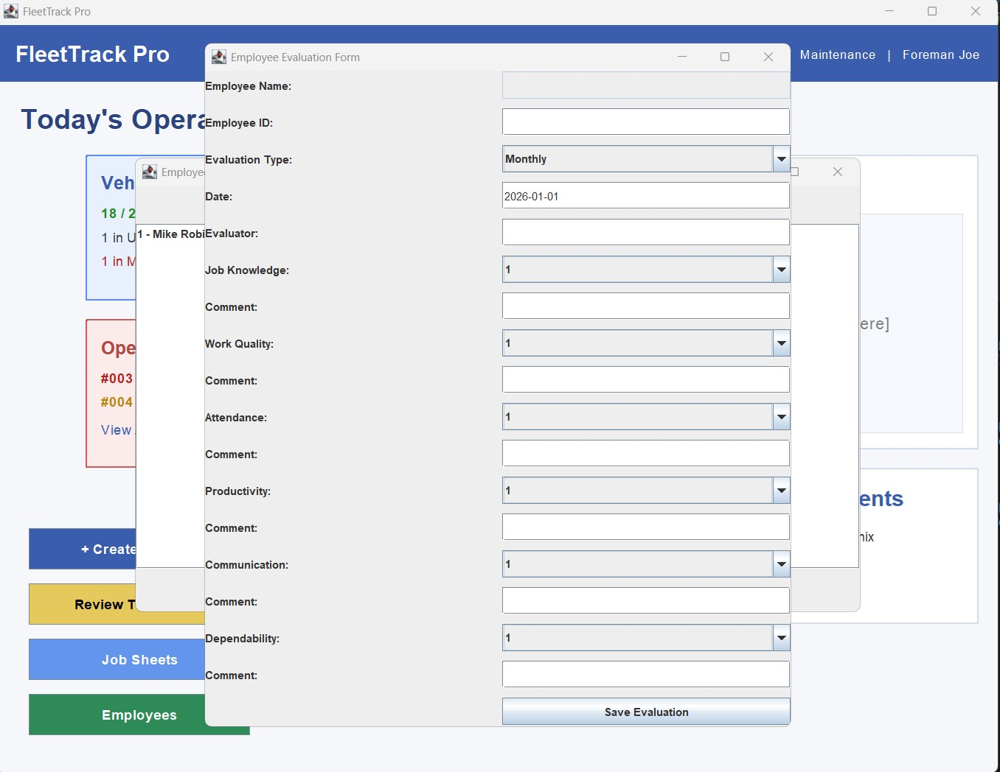

This page documents the progress of my Java-based Fleet Management Software project. The goal of this system is to manage trucks, drivers, employees, evaluations, and future business operations through a structured software application.
Latest update: March 23, 2026
The project moved beyond basic console planning and into graphical user interface development using Java Swing. I created the main FleetTrack dashboard and began building the employee management side of the software.
Below are real screenshots from the current version of the Fleet Management application.

Dashboard UI

Employee Management Screen

Employee Evaluation Form
Continued development of the backend structure by expanding the project into multiple working Java classes. This stage focused on making the application more realistic by organizing data into classes that represent trucks, drivers, employees, and system logic.
Began planning the Fleet Management Software project by defining the original structure and identifying major system components. At this stage, the focus was on designing the program and outlining how the software should grow over time.
The original plan was to start with a console-based Java application to focus on logic, testing, and object-oriented concepts before gradually transitioning into a full graphical interface.